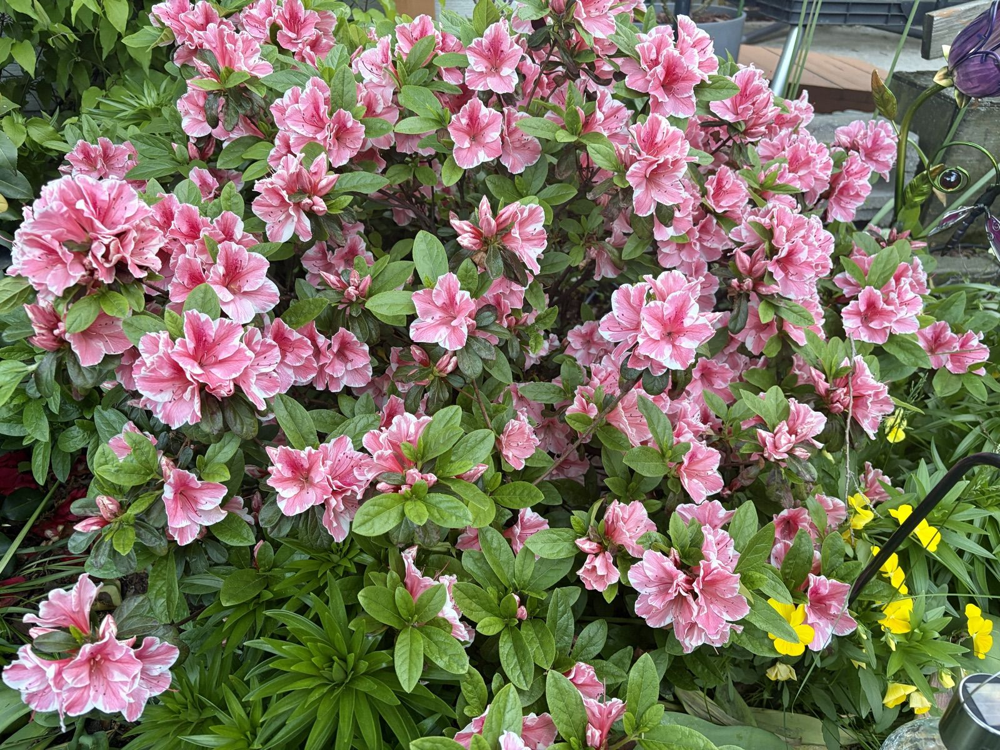
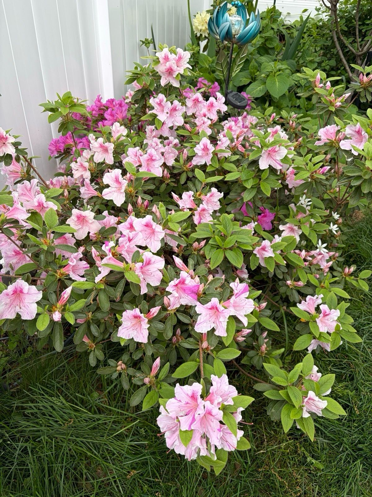
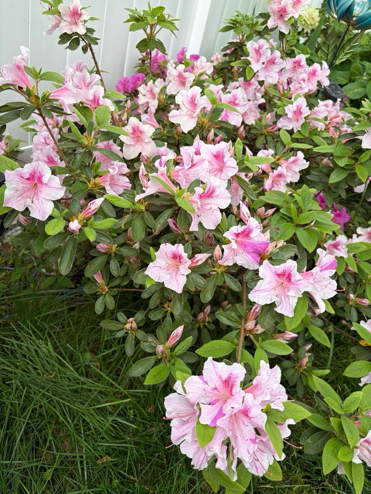
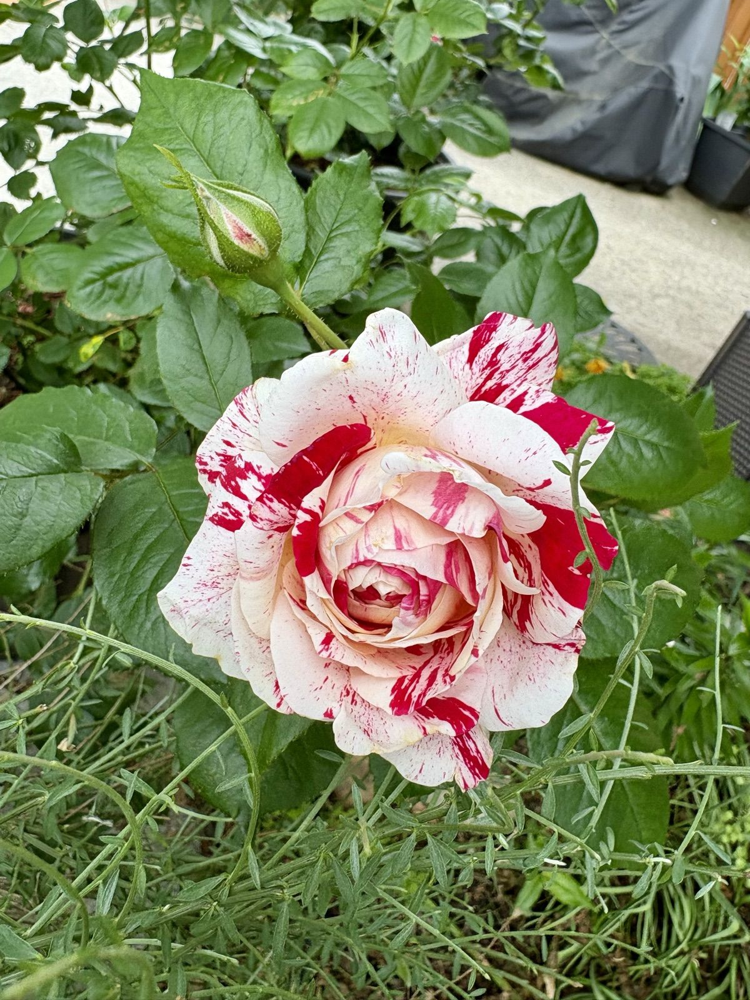
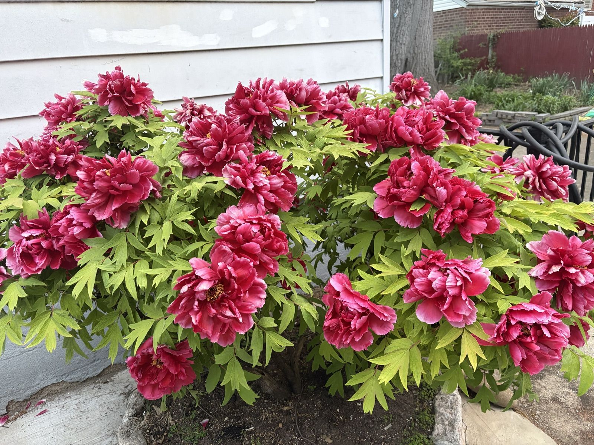

Azalea Season (and a Tree Peony That Outdid Itself)
Mid-May is when the azaleas take the baton from the tulips and run with it. I have three, all pink, all completely different pinks, and for two weeks they make the rest of the garden look like it isn't trying.

The salmon azalea by the walk is the oldest and the showiest. It disappears under its own flowers; from the street you can't see a single leaf. The pansies I tucked underneath in March turned out to be exactly the right shade of butter yellow, which I would love to claim was planned.


The pale pink one against the white fence is the interesting one up close: white flowers brushed with pink, freckled throats, and every so often a whole branch decides to bloom solid magenta — a sport from whatever it was grafted on. I've stopped correcting it. It's earned the eccentricity.

And then, just when the azaleas think they've won the month, the tree peony opens.

This plant came to me as a bare stick with two roots about six years ago, and I nearly gave up on it twice. Now every May it covers itself in ruffled raspberry blooms the size of my two hands spread out, and people genuinely stop on the sidewalk. Tree peonies don't die back like the herbaceous kind — that woody trunk is the whole point — so the only care it gets is a top-dressing of compost and me telling it it's beautiful.
Notes for next year: the azaleas get their trim right after bloom (they set next year's buds by midsummer — prune late and you prune the flowers off), and everybody gets a feeding of Holly-tone since all of these are acid-lovers.